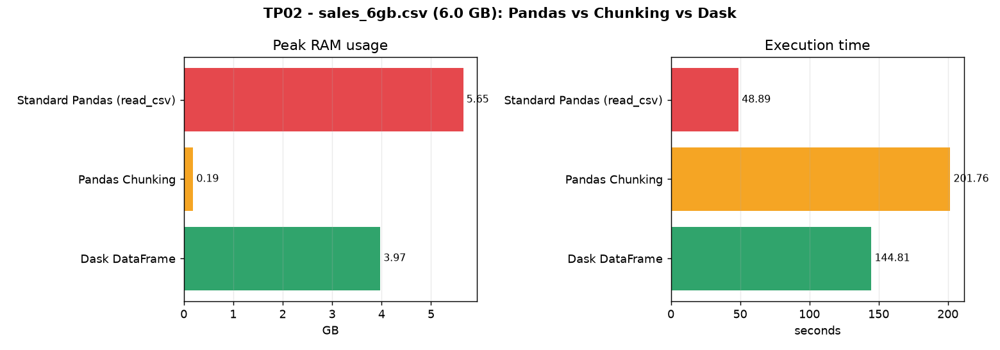
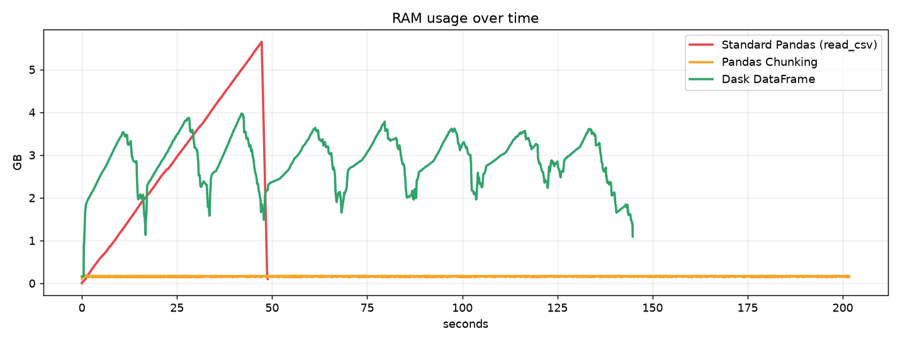

Method comparison: standard Pandas vs Pandas chunking vs Dask DataFrame.
| Method | Status | Peak RAM | Execution time |
|---|---|---|---|
| Standard Pandas (read_csv) | MemoryError (OOM) | 5.65 GB | 48.9 s |
| Pandas Chunking | OK (constant memory) | 0.19 GB | 201.8 s |
| Dask DataFrame | OK (parallel) | 3.97 GB | 144.8 s |

